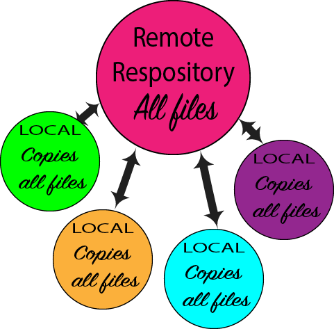
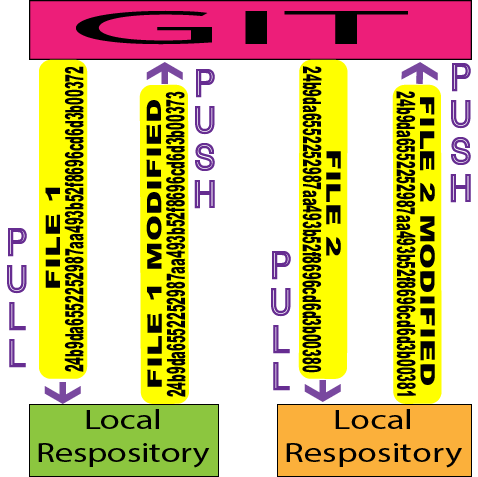
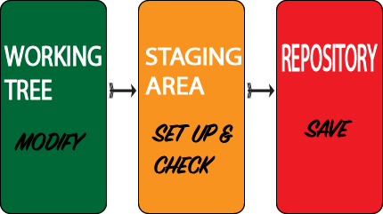
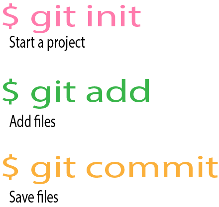
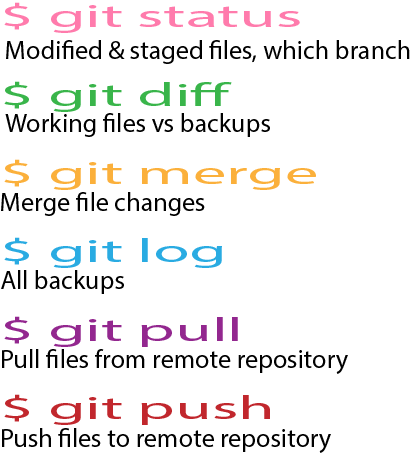

Highlight #1
Version Control Systems
A version control system (VCS) is one that is used to record changes to files over time. There are three types of version control systems.
- Local- The system is all in one place locally, usually on a type of database. This could work for individuals and small projects, but if there are a group of workers and a large amount of files, this system is not very effective.
- Central- There is one central repository on a server that contains all of the revisions to files that a group of workers have made. This works well to a certain extent, but issues can arise when people are working simultaneously on a file, if the server goes down then no one can complete any work, someone may accidentally modify someone elses work, an internet connection is needed in order to work, and it can be time consuming with the need to go to the server for all of the files.
- Distributed- Is both local and centralized. Each individual in a group gets a mirror of a central repository on their own machine. This eliminates the issues that arise from a centralized version control system.
Benefits of a distributed VCS
- Everyone has a complete copy of the remote repository on their own computer.
- Individuals work locally so no internet connection needed.
- There is no single point of failure, because everyone has a copy of the entire repository on their own machine.
- Everything goes faster because you don’t need to keep going back to a remote server for all of the files. No one can accidentally overwrite anything because there are measures in place to avoid this.
- There is a history of all of the changes that have been made to a file by multiple users.
- The system facilitates collaborative changes.
- It can be used by workers in all industries - developers, designers, business individuals.
- It is simple, easy, fast, and ideal for large groups.

Highlight #2
What is GIT?
GIT is one of the most popular types of distributed version control systems, it is free and open source, and is known for its ease of use, speed and modernity. This system is used by large companies such as Google, Facebook, Twitter and Netflix.
GIT consists of one remote and one or more local repositories. The remote repository is an outside server that everyone is connected to. The local repository is a mirror of this remote repository on a worker’s own machine. Individuals take a file from the remote repository, modify it, and then send it back. This is called 'pulling' a file from the remote repository and then 'pushing' it back once it is modified. GIT records the who, what, why and when of this activity. Merges then take place through a series of careful steps. All of these actions are automatically backed up and anyone can revert to former versions at any time.
There are measures made in GIT that make it difficult for anything to become lost or severely messed up. Every change that is made to a file is recorded with a check-sum. This ensures that nothing accidental can happen. An SHA-1 hash numbering system is used, which gives each committed change of a file a 40 hexadecimal character (0-9 and a-f). In general, most commands on GIT add data, and so the possibility of accidentally deleting something is very rare.

Highlight #3
GIT Basics
In a local repository, there are three sections of GIT that files are contained in.
- Working tree - where the modifying of a file takes place, a single checkout of one version of a file.
- Staging area - a file or index that shows what file modifications are set up to be saved permanently.
- Repository - where the saved files and metadata are stored.
The GIT process begins with an individual working on a file in the working tree section. Once they are satisfied with the changes they have made, they will move it to the staging area. Here, they can double check their work, make any last minute changes, and then be ready to save the changes permanently. Once they are ready, they save the changes in the local repository.
In order to take these steps, GIT uses simple commands that are typed into the terminal section of their program. Each command begins with a $ sign. The most commonly used commands are -
- $ git add - adds modified and new files to the staging area
- $ git commit - modified or new files are permanently saved to the local repository
- $ git push - files are pushed over to the remote repository to be saved there
- $ git status - shows all the files that were modified since the last back up, and which ones are in the staging area

Highlight #4
Starting with GIT
The first step that is taken when working with GIT for the first time, is to set up a repository. An individual can either create their own or clone an existing one.
Setting up your own repository
- Go to the directory on your computer that stores the files that you want to put into the repository. For example, on a Mac it will be found at - cd/users/User/my_project.
- Type $ git init into the terminal. This will create a subdirectory ending in .git.
- Add the files and commit them using $ git add and $ git commit -m.
Cloning an existing repository
- Get the URL of the directory you want to clone.
- Type in $ git clone <url>.
- Your directory will be given the same name as the cloned directory. If you want to rename it, type the new name next to it in an additional command. $ git clone <url> new name
Beginning a new project
- $ git init myproject - This command will start a new project’s control structures
- Cd myproject - This reply shows that a new folder has been created that will be used to store all of the files of the new project.
- $ git add . - When starting a new project, all unseen (untracked) files need to become visible to GIT. This command will make them visible (tracked). Once the files are added and recognized by GIT, they are put into the holding zone. Here they can be modified if needed, before being saved.
- $ git commit -m - After the files have been double checked and saved, a unique historical version of each file, along with the metadata for that file, will be created.

Highlight #5
GIT commands
The following is a comprehensive list of commands that are commonly used in GIT:
- $ git init - used to set up a personal workspace and open a new repository. One can be created new or cloned from an existing repository.
- $ git clone - clones a remote repository into a local repository
- $ git remote and origin - sets up a remote repository and calls it 'origin'
- $ git add - gets all the files that have been changed since the last commit and puts them into the staging area
- $ git commit -m - permanently saves files to a local repository
- $ git push - pushes files to a remote repository
- $ git pull - pulls changes from a remote repository into a local repository
- $ git log - shows all of the backups in a repository
- $ git status - shows all of the files that were modified since the last back up and which ones are in the staging area. It also looks for modified tracked or untracked files. In addition, this command also states what branch an individual is on (the default branch is master/origin which is the main branch at the remote repository).
- $ git blame_ - who wrote a particular line of code
- $ git diff - shows the difference between a working file and the backups of that file in a repository
- $ git checkout - switching to a different version of a file
- $ git merge - after multiple individuals have completed their work on a common project, it is individually merged with the primary copy. Before finalizing the merge, there are options that enable a worker to keep or reject another worker’s changes if they conflict